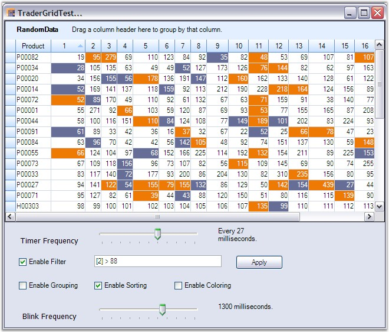

This section discusses an example that lets you make high frequency updates in efficient manner. It shows sort position changes, inserting and removing of records from a timer event. At start up, the grid grouping control is sorted by Column "1" and changes to fields in that column affects the sort position of a record. Also, the background colors of the cells in records are dependant on the value in column "1". This dependency is specified with the ReferencedFields property. The changes are highlighted for a short period of time after a change was detected.
ReferencedFields Property
ReferencedFields property, as the name implies, saves a list of field names referred by a given field. The engine will use these fields in the ListChanged event to determine which cells to update when a change was made in an underlying field.
It is very user interactive options and provides options to test the grid performance by enabling/disabling grouping, sorting, filtering in the midst of heavy updates. It also allows you to change the timer frequency that controls the throughput i.e., the number of updates per unit time. At run time, you can also vary the amount of time the changes are highlighted.
 Note: For Complete Code for this example, refer
the following Browser sample:
Note: For Complete Code for this example, refer
the following Browser sample:
<Install Location>\Syncfusion\EssentialStudio\[Version Number]\Windows\Grid.Grouping.Windows\Samples\2.0\Performance\Manual Total Summary Demo
Implementation
This example demonstrates the frequent updates that occur in random cells across the grid grouping control, while keeping the CPU usage at a minimum level. A timer changes cells in short intervals, inserts and removes rows. When you run the sample you also need to open up the TaskManager in order to notice the CPU usage while the sample runs. You should be able to start up multiple instances without slowing down your machine.
1. Set up a Grid Grouping control and load it with some random data. Enable the optimizations as required.
|
[C#]
GridGroupingControl gridGroupingControl1 = new GridGroupingControl(); gridGroupingControl1.VerticalThumbTrack = true; gridGroupingControl1.HorizontalThumbTrack = true; gridGroupingControl1.TableOptions.VerticalPixelScroll = true; gridGroupingControl1.DataSource = GetRandomDataTable(); this.gridGroupingControl1.ShowGroupDropArea = true;
// Use less memory for internal binary tree structures. gridGroupingControl1.CounterLogic = EngineCounters.YAmount; gridGroupingControl1.AllowedOptimizations = EngineOptimizations.DisableCounters | EngineOptimizations.RecordsAsDisplayElements;
// Use faster GDI drawing. gridGroupingControl1.UseDefaultsForFasterDrawing = true;
// Skip Currency Manager. gridGroupingControl1.BindToCurrencyManager = false;
// Immediate update after each ListChanged event. gridGroupingControl1.UpdateDisplayFrequency = 1;
// Scroll Window will cause immediate update. gridGroupingControl1.InsertRemoveBehavior = GridListChangedInsertRemoveBehavior.ScrollWithImmediateUpdate; gridGroupingControl1.SortPositionChangedBehavior = GridListChangedInsertRemoveBehavior.ScrollWithImmediateUpdate;
// InsertRemoveBehaior/SortPositionChangedBehavior takes effect only when InvalidateAll is set to false. gridGroupingControl1.InvalidateAllWhenListChanged = false; |
|
[VB.NET]
Dim gridGroupingControl1 As New GridGroupingControl() gridGroupingControl1.VerticalThumbTrack = True gridGroupingControl1.HorizontalThumbTrack = True gridGroupingControl1.TableOptions.VerticalPixelScroll = True gridGroupingControl1.DataSource = GetRandomDataTable() Me.gridGroupingControl1.ShowGroupDropArea = True
' Use less memory for internal binary tree structures. gridGroupingControl1.CounterLogic = EngineCounters.YAmount gridGroupingControl1.AllowedOptimizations = EngineOptimizations.DisableCounters Or EngineOptimizations.RecordsAsDisplayElements
' Use faster GDI drawing. gridGroupingControl1.UseDefaultsForFasterDrawing = True
' Skip Currency Manager. gridGroupingControl1.BindToCurrencyManager = False
' Immediate update after each ListChanged event. gridGroupingControl1.UpdateDisplayFrequency = 1
' Scroll Window will cause immediate update. gridGroupingControl1.InsertRemoveBehavior = GridListChangedInsertRemoveBehavior.ScrollWithImmediateUpdate gridGroupingControl1.SortPositionChangedBehavior = GridListChangedInsertRemoveBehavior.ScrollWithImmediateUpdate
' InsertRemoveBehaior/SortPositionChangedBehavior takes effect only when InvalidateAll is set to false. gridGroupingControl1.InvalidateAllWhenListChanged = False |
2. Set AllowBlink to true for all the columns in order to enable highlighting cells for a short period of time when a change is detected. Engine.AddBaseStylesForBlinking method is used to add base styles for the customization of the appearance of blink cells. Initialize the base styles for various blink states. PrepareViewStyleInfo is handled to set the custom base style for a newly added record. A cell change is highlighted by checking its BlinkState. BlinkState indicates whether the cell's value is increased or reduced or if the record has been recently added. If its state is either Increased or Reduced, its back color and text colors are changed.
|
[C#]
// Allow Blinking for all the columns. // Highlight up and down ticks. gridGroupingControl1.BlinkTime = 700; for (int i = 1; i <= 20; i++) gridGroupingControl1.TableDescriptor.Columns[i.ToString()].AllowBlink = true; gridGroupingControl1.Engine.AddBaseStylesForBlinking(); gridGroupingControl1.BaseStyles[GridEngine.BlinkIncreased].StyleInfo.TextColor = Color.White; gridGroupingControl1.BaseStyles[GridEngine.BlinkReduced].StyleInfo.TextColor = Color.White;
gridGroupingControl1.Engine.BaseStyles.Add("CustomStyle"); gridGroupingControl1.BaseStyles["CustomStyle"].StyleInfo.TextColor = Color.Black; gridGroupingControl1.BaseStyles["CustomStyle"].StyleInfo.BackColor = Color.White;
// PrepareViewStyleInfo void gridGroupingControl1_TableControlPrepareViewStyleInfo(object sender, GridTableControlPrepareViewStyleInfoEventArgs e) { GridTableCellStyleInfo style = (GridTableCellStyleInfo)e.Inner.Style; BlinkState bs = gridGroupingControl1.GetBlinkState(style.TableCellIdentity); if (bs != BlinkState.None) { if (bs == BlinkState.NewRecord) { e.Inner.Style.BaseStyle = "CustomStyle"; } } } |
|
[VB.NET]
' Allow Blinking for all the columns. ' Highlight up and downticks. gridGroupingControl1.BlinkTime = 700 For i As Integer = 1 To 20 gridGroupingControl1.TableDescriptor.Columns(i.ToString()).AllowBlink = True Next i gridGroupingControl1.Engine.AddBaseStylesForBlinking() gridGroupingControl1.BaseStyles(GridEngine.BlinkIncreased).StyleInfo.TextColor = Color.White gridGroupingControl1.BaseStyles(GridEngine.BlinkReduced).StyleInfo.TextColor = Color.White
gridGroupingControl1.Engine.BaseStyles.Add("CustomStyle") gridGroupingControl1.BaseStyles("CustomStyle").StyleInfo.TextColor = Color.Black gridGroupingControl1.BaseStyles("CustomStyle").StyleInfo.BackColor = Color.White
' PrepareViewStyleInfo Private Sub gridGroupingControl1_TableControlPrepareViewStyleInfo(ByVal sender As Object, ByVal e As GridTableControlPrepareViewStyleInfoEventArgs) Dim style As GridTableCellStyleInfo = CType(e.Inner.Style, GridTableCellStyleInfo) Dim bs As BlinkState = gridGroupingControl1.GetBlinkState(style.TableCellIdentity) If bs <> BlinkState.None Then If bs = BlinkState.NewRecord Then e.Inner.Style.BaseStyle = "CustomStyle" End If End If End Sub |
3. A timer event is handled to insert and remove the records. This results in frequent list changes at regular intervals.
|
[C#]
bool skipTimer = false; private void timer_Tick(object sender, EventArgs e) { if (skipTimer) return; timerCount++; try { for (int i = 0; i < m_numUpdatesPerTick; i++) { // Application.DoEvents(); int recNum = rand.Next(table.Rows.Count - 1); int rowNum = recNum + 1; int col = rand.Next(16) + 1; int colNum = col + 1; DataRow drow = table.Rows[recNum]; if (!(drow[col] is DBNull)) drow[col] = (int) (Convert.ToDouble(drow[col]) * (rand.Next(50) / 100.0f + 0.8)); }
// Insert or remove a row. if (insertRemoveCount == 0) return; if (toggleInsertRemove > 0 && (timerCount % insertRemoveModulus) == 0) { icount = ++icount % (toggleInsertRemove * 2); shouldInsert = icount < toggleInsertRemove; if (shouldInsert) { for (int ri = 0; ri < insertRemoveCount; ri++) { int recNum = 5; int next = rand.Next(100); object[] row = new object[]{"H"+ti.ToString("00000"),next+1,next+2,next+3,next+4,next+5,next+6,next+7,next+8,next+9, next+10,next+11,next+12,next+13,next+14,next+15,next+16,next+17,next+18,next+19,next+20}; ti++; DataRow drow = table.NewRow(); drow.ItemArray = row; table.Rows.InsertAt(drow, recNum); } } else { for (int ri = 0; ri < insertRemoveCount; ri++) { int recNum = 5; int rowNum = recNum + 1;
// Underlying data structure (this could be a data table or whatever structure // you use behind a virtual grid). if (table.Rows.Count > 10) table.Rows.RemoveAt(recNum); } } } } finally { } } |
|
[VB.NET]
Private skipTimer As Boolean = False
Private Sub timer_Tick(ByVal sender As Object, ByVal e As EventArgs) If skipTimer Then Return End If
timerCount += 1
Try Dim i As Integer = 0 Do While i < m_numUpdatesPerTick
' Application.DoEvents(); Dim recNum As Integer = rand.Next(table.Rows.Count - 1) Dim rowNum As Integer = recNum + 1 Dim col As Integer = rand.Next(16) + 1 Dim colNum As Integer = col + 1 Dim drow As DataRow = table.Rows(recNum) If Not(TypeOf drow(col) Is DBNull) Then drow(col) = CInt(Convert.ToDouble(drow(col)) * (rand.Next(50) / 100.0f + 0.8)) End If i += 1 Loop
' Insert or remove a row. If insertRemoveCount = 0 Then Return End If
If toggleInsertRemove > 0 AndAlso (timerCount Mod insertRemoveModulus) = 0 Then icount += 1 icount = icount Mod (toggleInsertRemove * 2) shouldInsert = icount < toggleInsertRemove
If shouldInsert Then Dim ri As Integer = 0
Do While ri < insertRemoveCount Dim recNum As Integer = 5
Dim next_Renamed As Integer = rand.[next](100) Dim row As Object() = New Object(){{"H"+ti.ToString("00000"),next_Renamed+1,next_Renamed+2,next_Renamed+3, next_Renamed+4, next_Renamed+5,next_Renamed+6, next_Renamed+7,next_Renamed+8,next_Renamed+9,next_Renamed+10, next_Renamed+11,next_Renamed+12,next_Renamed+13,next_Renamed+14, next_Renamed+15,next_Renamed+16,next_Renamed+17, next_Renamed+18,next_Renamed+19,next_Renamed+20} ti += 1 Dim drow As DataRow = table.NewRow() drow.ItemArray = row table.Rows.InsertAt(drow, recNum) ri += 1 Loop Else Dim ri As Integer = 0 Do While ri < insertRemoveCount Dim recNum As Integer = 5 Dim rowNum As Integer = recNum + 1
' Underlying data structure (this could be a data table or whatever structure ' you use behind a virtual grid).
If table.Rows.Count > 10 Then table.Rows.RemoveAt(recNum) End If ri += 1 Loop End If End If
Finally End Try End Sub |
4. QueryCellStyleInfo is handled to enable coloring of the cells. The background colors of the cells in the records are dependent on the column "1" values. This dependency is specified using the Referenced Fields property. To make user friendly, you can use a CheckBox control to enable or disable this coloring. Hook this event if the checked state of the CheckBox is true; unhook otherwise.
|
[C#]
Color[] colors = new Color[] { Color.FromArgb( 0x85, 0xbf, 0x75 ), Color.FromArgb( 0xb4, 0xe7, 0xf2 ), Color.FromArgb( 0xff, 0xbf, 0x34 ), Color.FromArgb( 0x82, 0x2e, 0x1b ), Color.FromArgb( 0x3a, 0x86, 0x7e ),};
void gridGroupingControl1_QueryCellStyleInfo(object sender, GridTableCellStyleInfoEventArgs e) { GridTableCellStyleInfo style = (GridTableCellStyleInfo)e.Style; if (e.TableCellIdentity.TableCellType == GridTableCellType.RecordFieldCell || e.TableCellIdentity.TableCellType == GridTableCellType.AlternateRecordFieldCell) { if (e.TableCellIdentity.Column.FieldDescriptor.FieldPropertyType == typeof(string)) return; // Get the value from column 1 and color all cells in record based on this value. Record r = e.Style.TableCellIdentity.DisplayElement.GetRecord(); object value = r.GetValue("1"); int v = Convert.ToInt32(value) % colors.Length; e.Style.BackColor = colors[v]; } }
// CheckBox event to enable or disable cell coloring. private void checkBoxColor_CheckedChanged(object sender, System.EventArgs e) { if (this.checkBoxColor.Checked) { // Callback for dynamically coloring cells. gridGroupingControl1.QueryCellStyleInfo += new GridTableCellStyleInfoEventHandler(gridGroupingControl1_QueryCellStyleInfo);
// The color of these cells depends on value of cell 1. If engines ListChanged handler // detects a change to column 1, it should also automatically repaint the dependant columns. for (int i = 2; i <= 20; i++) gridGroupingControl1.TableDescriptor.Fields[i.ToString()].ReferencedFields = "1"; } else { gridGroupingControl1.QueryCellStyleInfo -= new GridTableCellStyleInfoEventHandler(gridGroupingControl1_QueryCellStyleInfo); gridGroupingControl1.TableDescriptor.Fields.LoadDefault(); } this.gridGroupingControl1.Refresh(); } |
|
[VB.NET]
Private colors As Color() = New Color() {Color.FromArgb(&H85, &HBF, &H75), Color.FromArgb(&HB4, &HE7, &HF2), Color.FromArgb(&HFF, &HBF, &H34), Color.FromArgb(&H82, &H2E, &H1B), Color.FromArgb(&H3A, &H86, &H7E)}
Private Sub gridGroupingControl1_QueryCellStyleInfo(ByVal sender As Object, ByVal e As GridTableCellStyleInfoEventArgs) Dim style As GridTableCellStyleInfo = CType(e.Style, GridTableCellStyleInfo) If e.TableCellIdentity.TableCellType = GridTableCellType.RecordFieldCell OrElse e.TableCellIdentity.TableCellType = GridTableCellType.AlternateRecordFieldCell Then If e.TableCellIdentity.Column.FieldDescriptor.FieldPropertyType Is GetType(String) Then Return End If
' Get the value from column 1 and color all cells in record based on this value. Dim r As Record = e.Style.TableCellIdentity.DisplayElement.GetRecord() Dim value As Object = r.GetValue("1") Dim v As Integer = Convert.ToInt32(value) Mod colors.Length e.Style.BackColor = colors(v) End If End Sub
Private Sub checkBoxColor_CheckedChanged(ByVal sender As Object, ByVal e As System.EventArgs) Handles checkBoxColor.CheckedChanged If Me.checkBoxColor.Checked Then
' Callback for dynamically coloring cells. AddHandler gridGroupingControl1.QueryCellStyleInfo, AddressOf gridGroupingControl1_QueryCellStyleInfo
' The color of these cells depends on value of cell 1. If engines ListChanged handler ' detects a change to column 1, it should also automatically repaint the dependant columns. For i As Integer = 2 To 20 gridGroupingControl1.TableDescriptor.Fields(i.ToString()).ReferencedFields = "1" Next i Else RemoveHandler gridGroupingControl1.QueryCellStyleInfo, AddressOf gridGroupingControl1_QueryCellStyleInfo gridGroupingControl1.TableDescriptor.Fields.LoadDefault() End If Me.gridGroupingControl1.Refresh() End Sub |
5. Add three more CheckBoxes to include options to enable or disable Grouping, Sorting and Filtering at runtime. Handle their CheckedChanged events to add the code for adding and removing groups, sorted columns and record filters. For example, if the checked state of groupCheckBox is true, group the table against a column. When its checked state is turned to false, simply ungroup the table.
|
[C#]
// Sorting Option. private void checkBoxSorting_CheckedChanged(object sender, System.EventArgs e) { if (this.checkBoxSorting.Checked) { gridGroupingControl1.TableDescriptor.SortedColumns.Clear(); gridGroupingControl1.TableDescriptor.SortedColumns.Add("1"); gridGroupingControl1.TableDescriptor.SortedColumns.Add("2"); } else { gridGroupingControl1.TableDescriptor.SortedColumns.Clear(); } this.gridGroupingControl1.Refresh(); }
// Grouping Option. private void checkBoxGrouping_CheckedChanged(object sender, System.EventArgs e) { if (this.checkBoxGrouping.Checked) { gridGroupingControl1.TableDescriptor.GroupedColumns.Clear(); gridGroupingControl1.TableDescriptor.GroupedColumns.Add("1"); this.gridGroupingControl1.Table.ExpandAllGroups(); } else { gridGroupingControl1.TableDescriptor.GroupedColumns.Clear(); } this.gridGroupingControl1.Refresh(); }
// Filter Option. private void checkBoxFilter_CheckedChanged(object sender, System.EventArgs e) { if (this.checkBoxFilter.Checked) { gridGroupingControl1.TableDescriptor.RecordFilters.Clear();
// Gets the filter expression from a Text Box. gridGroupingControl1.TableDescriptor.RecordFilters.Add(this.textBoxFilter.Text); } else { gridGroupingControl1.TableDescriptor.RecordFilters.Clear(); } this.gridGroupingControl1.Refresh(); } |
|
[VB.NET.NET]
' Sorting Option. Private Sub checkBoxSorting_CheckedChanged(ByVal sender As Object, ByVal e As System.EventArgs) Handles checkBoxSorting.CheckedChanged If Me.checkBoxSorting.Checked Then gridGroupingControl1.TableDescriptor.SortedColumns.Clear() gridGroupingControl1.TableDescriptor.SortedColumns.Add("1") gridGroupingControl1.TableDescriptor.SortedColumns.Add("2") Else gridGroupingControl1.TableDescriptor.SortedColumns.Clear() End If Me.gridGroupingControl1.Refresh() End Sub
' Grouping Option. Private Sub checkBoxGrouping_CheckedChanged(ByVal sender As Object, ByVal e As System.EventArgs) Handles checkBoxGrouping.CheckedChanged If Me.checkBoxGrouping.Checked Then gridGroupingControl1.TableDescriptor.GroupedColumns.Clear() gridGroupingControl1.TableDescriptor.GroupedColumns.Add("1") gridGroupingControl1.Table.ExpandAllGroups() Else gridGroupingControl1.TableDescriptor.GroupedColumns.Clear() End If Me.gridGroupingControl1.Refresh() End Sub
' Filtering Option. Private Sub checkBoxFilter_CheckedChanged(ByVal sender As Object, ByVal e As System.EventArgs) Handles checkBoxFilter.CheckedChanged If Me.checkBoxFilter.Checked Then gridGroupingControl1.TableDescriptor.RecordFilters.Clear() gridGroupingControl1.TableDescriptor.RecordFilters.Add(Me.textBoxFilter.Text) Else gridGroupingControl1.TableDescriptor.RecordFilters.Clear() End If Me.gridGroupingControl1.Refresh() End Sub |
6. Two TrackBar controls are used to change the frequencies of the Timer and BlinkTime. The frequencies that are set by the end user are integrated into the grid grouping control in their respective TrackBarScroll event handlers.
|
[C#]
// To change the Blink Time Frequency. private void trackBarBlinkFrequency_Scroll(object sender, System.EventArgs e) { this.gridGroupingControl1.BlinkTime = this.trackBarBlinkFrequency.Value*100; if (this.gridGroupingControl1.BlinkTime == 0) this.labelBlinkTime.Text = String.Format("Disabled."); else this.labelBlinkTime.Text = String.Format("{0} milliseconds.", gridGroupingControl1.BlinkTime); this.gridGroupingControl1.Refresh(); }
// To change the Timer Frequency. private void trackBarTimer_Scroll(object sender, System.EventArgs e) { if (this.trackBarTimer.Value == 0) { timer.Enabled = false; this.labelTimerInterval.Text = String.Format("Timer disabled."); } else { timer.Interval = 1000/(this.trackBarTimer.Value*trackBarTimer.Value); timer.Enabled = true; this.labelTimerInterval.Text = String.Format("Every {0} milliseconds.", timer.Interval); } } |
|
[VB.NET]
' To change the Blink Time Frequency Private Sub trackBarBlinkFrequency_Scroll(ByVal sender As Object, ByVal e As System.EventArgs) Handles trackBarBlinkFrequency.Scroll Me.gridGroupingControl1.BlinkTime = Me.trackBarBlinkFrequency.Value * 100 If Me.gridGroupingControl1.BlinkTime = 0 Then Me.labelBlinkTime.Text = String.Format("Disabled.") Else Me.labelBlinkTime.Text = String.Format("{0} milliseconds.", gridGroupingControl1.BlinkTime) End If Me.gridGroupingControl1.Refresh() End Sub
' To change the Timer Frequency. Private Sub trackBarTimer_Scroll(ByVal sender As Object, ByVal e As System.EventArgs) Handles trackBarTimer.Scroll If Me.trackBarTimer.Value = 0 Then timer.Enabled = False Me.labelTimerInterval.Text = String.Format("Timer disabled.") Else timer.Interval = 1000 / (Me.trackBarTimer.Value * trackBarTimer.Value) timer.Enabled = True Me.labelTimerInterval.Text = String.Format("Every {0} milliseconds.", timer.Interval) End If End Sub |
7. Given below is a sample screen shot. While running the sample, apply grouping, sorting and filtering and then check for the CPU time usage in the TaskManager to detect the grid performance.

Figure 259: High Frequency Updates in Grid Grouping Control